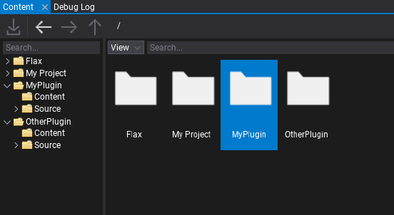

Plugin Project
Flax supports the concept of plugin projects. A plugin project is a separate Flax project that can be referenced from a game project and distributed as a plugin. Flax supports these references between nested projects. This concept is used by default in game projects by referencing the engine project. In this documentation section, you will learn how to reference and use the plugin project in your game project.
Create a new project and add it to your existing project workspace subdirectory. For instance, place it in the Plugin/<plugin_name> folder. You can also use an example plugin project to do this.
It is imperitive that you rename plugin project files as the default name of "Game" cannot be used or it will conflict with the primary project name in global context during build (if left with default name of "Game"). To rename the plugin project, you will need to first open the .flaxproj in the editor and double-click a C# source file to generate the C# project files and necessary build scripts. Then rename the .flaxproj file, the .Net project files (.csproj), source files and class names replacing "Game" with your plugin name (e.g. "MyPlugin"). Once renaming is complete right-click the .flaxproj to "generate project script files" there should be no issues with generating script files, if there are then comb through the naming.
Next, add a reference from your game project to the added plugin project. Open <project_name>.flaxproj with a text editor and add reference to the plugin project:
"References": [
{
"Name": "$(EnginePath)/Flax.flaxproj"
},
{
"Name": "$(ProjectPath)/Plugins/MyPlugin/MyPlugin.flaxproj"
}
],
As you can see, by using $(ProjectPath) followed by the local path you can reference the plugin project file directly. Then you can open the editor and use content and scripts from the plugin project in your game.
If you want to reference the types from referenced project code modules add reference in your game code module build script (in Setup function):
options.PrivateDependencies.Add("MyPlugin");
Plugin projects can also reference other projects but cross-solution references are not supported.
